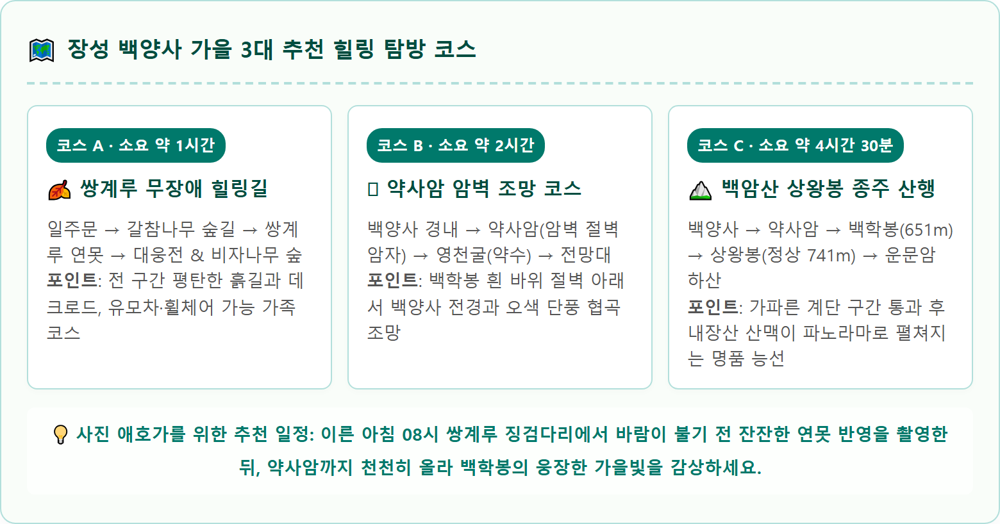

A breathtaking, iconic autumn landscape photograph of Baegyangsa Temple in Jangseong, South Korea during early November peak foliage. The historic wooden pavilion Ssanggyeru stands elegantly next to a pristine, mirror-like tranquil pond. Behind the pavilion, the towering white limestone cliff of Baekhakbong Peak rises dramatically against an azure blue autumn sky. The surrounding valley is ablaze with vibrant multicolored baby maple trees displaying brilliant scarlet, golden yellow, and deep orange foliage. The tranquil pond reflects a crystal-clear symmetrical image of the colorful pagoda and the white cliff. A rustic stepping stone pathway crosses the foreground stream. Warm crisp autumn morning light, photorealistic 8k, National Geographic traveler photography style, 1:1 aspect ratio.
전라남도 장성군 북하면 백암산(해발 741m) 자락에 자리한 백양사(白羊寺)는 백제 무왕 33년(632년) 여환조사가 백암사로 창건한 천년고찰입니다.
조선 선조 때 환양선사가 절에서 금강경을 설법할 때 흰 양(白羊)이 내려와 눈물을 흘리며 계를 받고 천상으로 올라갔다는 전설에서 유래하여 '백양사'라는 이름을 얻게 되었습니다.
가을이 깊어지면 백양사 일대는 온통 붉고 노란 애기단풍으로 물듭니다. 백양사의 단풍은 일반 단풍잎보다 크기가 어른 엄지손톱만큼 작아서 '애기단풍'이라 불리며, 일교차가 크고 일조량이 풍부한 백암산 특유의 기후 덕분에 유난히 붉고 윤기가 흐릅니다.
특히 사찰 뒤편으로 우뚝 솟은 거대한 백색 바위 봉우리인 백학봉(해발 651m)과 조선 후기 누각인 쌍계루(雙溪樓), 그리고 이를 그대로 비추는 잔잔한 연못의 반영은 한국관광공사가 선정한 한국의 아름다운 가을 풍경 1순위로 손꼽힙니다.
내장산 국립공원은 산세가 남북으로 뻗어 있어 정읍 방면의 내장사와 장성 방면의 백양사 사이에 단풍 시기가 약 3~4일 정도 차이가 납니다.
| 단계별 시기 | 예상 일정 | 단풍 상태 및 관람 포인트 |
|---|---|---|
| 단풍 시작 (첫 단풍) | 10월 18일 ~ 10월 22일 | 백학봉 정상부와 상왕봉 능선부터 20%가량 붉은 물이 들기 시작하는 단계 |
| 단풍 진입기 | 10월 23일 ~ 10월 27일 | 일주문에서 쌍계루로 이어지는 계곡 숲길에 오색 단풍이 약 50% 물드는 시기 |
| 단풍 절정기 (골든타임) ★ 최고 절정 |
10월 28일 ~ 11월 12일 | 쌍계루 연못 반영과 대웅전 경내, 700년 갈참나무 숲까지 80% 이상 만개하는 최고의 절정기 |
| 단풍 엔딩 (낙엽기) | 11월 13일 ~ 11월 18일 | 낙엽이 붉은 융단처럼 바닥을 덮고 수면에 붉은 단풍잎이 흩날리는 서정적 시기 |
기상청 단풍 관측 기준에 따르면 백양사 단풍은 10월 말 주말부터 11월 첫째 주 사이에 가장 화려한 색채를 뽐내므로, 사진 촬영이나 가족 나들이를 계획한다면 이 시기를 타깃으로 잡는 것이 가장 좋습니다.
백양사는 2023년 5월 조계종 산하 문화재 관람료 감면 조치에 따라 입장료가 전면 무료(0원)로 변경되었습니다. 따라서 방문객은 국립공원 주차장 요금만 부담하면 됩니다.
| 주차장 구분 | 일주문까지 거리 | 주차 요금 (성수기 기준) | 특징 및 진입 팁 |
|---|---|---|---|
| 백양사 제1주차장 사찰 경내 최인접 |
사찰 바로 앞 (쌍계루 5분) | 경차 2,000원 중·소형 5,000원 |
오전 08:00 이전 만차. 단풍 피크기에는 오전 8시 30분부터 차량 진입 전면 차단 |
| 백양사 제2주차장 (상가 지구) |
일주문까지 도보 15분 | 경차 2,000원 중·소형 5,000원 |
식당가와 매표소 인접. 숲길 데크로드가 잘 조성되어 있어 걷기에 무리 없음 |
| 백양사 제3주차장 (외곽 임시) |
일주문까지 도보 30분 (무료 셔틀 운행) |
무료 또는 정액 5,000원 | 주말 오전 9시 이후 도착 차량 유도. 국립공원 무료 셔틀버스(5~10분 간격) 탑승 추천 |

백양사를 상징하는 한 컷의 사진은 언제나 쌍계루 앞 연못 징검다리에서 탄생합니다.
쌍계루는 고려 충유왕 때 각진국사가 세운 누각으로, 포은 정몽주, 삼봉 정도전 등 당대 최고의 문인들이 시를 남겼을 만큼 뛰어난 풍광을 자랑합니다. 누각 앞 인공 연못에는 돌로 만든 징검다리가 가로놓여 있어, 사진가들이 줄을 서서 셔터를 누르는 명당입니다.
백양사의 매력은 애기단풍에만 머물지 않습니다. 일주문에서 사찰로 이어지는 약 1.5km 숲길은 대한민국에서 가장 오래된 수령 700년 갈참나무와 거대한 고목들이 터널을 이루고 있습니다.
노랗고 붉게 물든 활엽수 잎들이 바람에 바스락거리며 떨어지는 숲길은 '한국의 아름다운 길 100선'에 선정된 힐링 로드입니다.
사찰 뒤편 산기슭에는 천연기념물 제153호로 지정된 장성 백양사 비자나무 숲이 장관을 이룹니다. 고려 고종 때 각진국사가 사찰 주변에 심은 8,000여 그루의 비자나무가 울창한 상록수림을 형성하고 있어, 붉은 가을 단풍과 짙푸른 녹음이 어우러지는 독특한 시각적 대비를 선사합니다.
숲길을 지나 백양사 경내로 들어서면 백학봉의 웅장한 흰 바위산이 사찰 전각들을 병풍처럼 감싸 안고 있는 명당의 기운이 온몸으로 전해집니다.
보물로 지정된 백양사 소조비로자나불좌상을 모신 대웅전과 조선 중기의 단아한 목조 건축미를 보여주는 극락보전은 고요한 산사의 평온함을 자아냅니다.
사찰 마당 한편에는 천연기념물 제486호인 백양사 고불매(古佛梅)가 서 있으며, 가을철 방문객들이 가족의 건강과 수능 대박을 기원하며 적어 내려간 소원 기와들이 정갈하게 줄지어 있습니다.
평지 산책로에 만족하지 못하는 산행 마니아라면 백양사 뒤편 약사암(藥師庵) 코스를 적극 추천합니다.
백양사 경내에서 출발해 가파른 숲길과 계단을 따라 약 30분 정도 땀을 흘리며 오르면 백학봉 깎아지른 절벽 중간에 제비집처럼 자리 잡은 약사암에 닿습니다.
약사암 앞마당 전망대에 서면 백양사 경내 전경과 쌍계루 연못, 그리고 계곡을 붉게 물들인 오색 단풍의 바다가 한눈에 내려다보이는 압도적인 파노라마 조망을 만끽할 수 있습니다. 약사암에서 10분 더 오르면 사시사철 차가운 석간수가 솟아나는 영천굴(靈泉窟)에서 목을 축일 수 있습니다.
장성 여행을 계획했다면 백양사와 함께 차로 25분 거리인 장성 황룡강 생태공원을 연계 코스로 묶어보세요.
황룡강변을 따라 수십억 송이의 황화코스모스, 백일홍, 핑크뮬리가 끝없이 피어나는 '황룡강 가을꽃 축제'가 매년 10월 열립니다.
오전에 백양사에서 고즈넉한 사찰 단풍과 산림욕을 즐긴 뒤, 오후에 황룡강으로 이동하여 드넓은 강변 꽃밭을 배경으로 화사한 가을 인생샷을 남기면 가을 낭만을 완벽하게 채울 수 있습니다.
백양사 탐방 후에는 장성만의 특색 있는 미식을 경험해볼 차례입니다.
• 장성 백양 대봉감 & 곶감: 백암산 자락의 큰 일교차 속에서 자란 장성 대봉감은 당도가 높고 과즙이 풍부하기로 유명합니다. 백양사 주차장 인근 농특산물 직판장에서 갓 수확한 싱싱한 대봉감 한 상자를 저렴하게 구입할 수 있습니다.
• 산채비빔밥과 버섯전골: 백양사 제2주차장 상가 단지에는 십여 가지의 산나물과 고소한 들기름을 넣은 산채비빔밥, 자연산 버섯을 듬뿍 넣은 버섯전골 맛집들이 모여 있습니다. 정갈한 남도 밑반찬이 곁들여져 푸짐한 한 끼를 즐길 수 있습니다.
• 장성 삼채 떡갈비: 단맛, 쓴맛, 매운맛의 세 가지 맛이 나는 약초인 삼채(三菜)를 듬뿍 넣어 잡내를 잡고 육즙을 살린 장성 한우 떡갈비는 남녀노소 누구나 좋아하는 최고의 별미입니다.